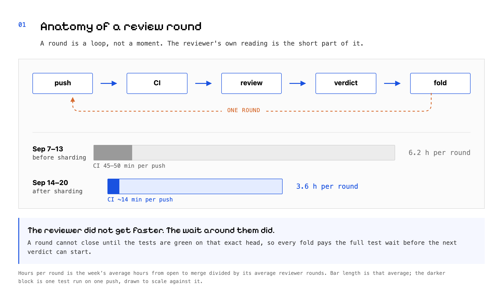
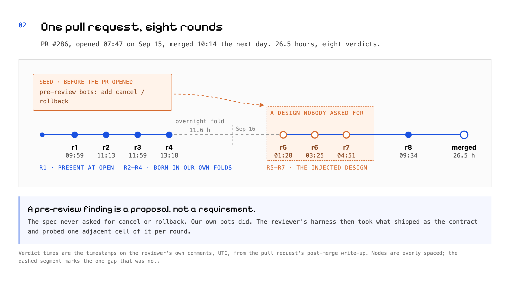
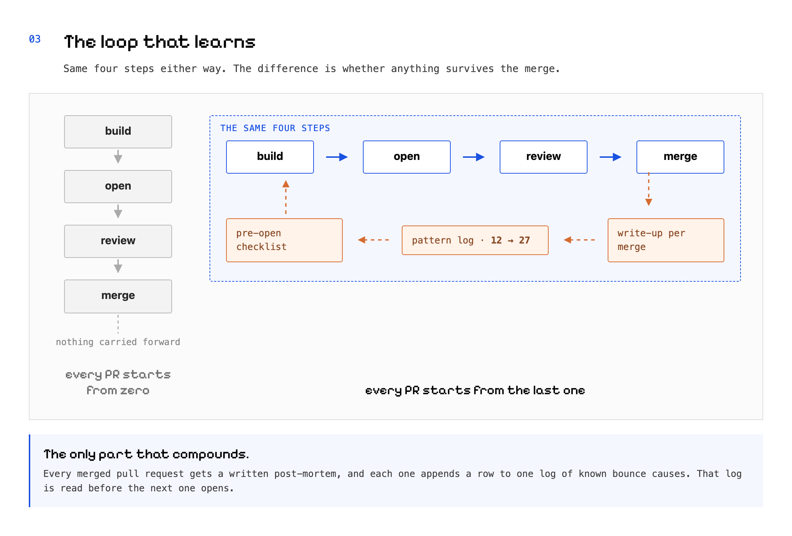
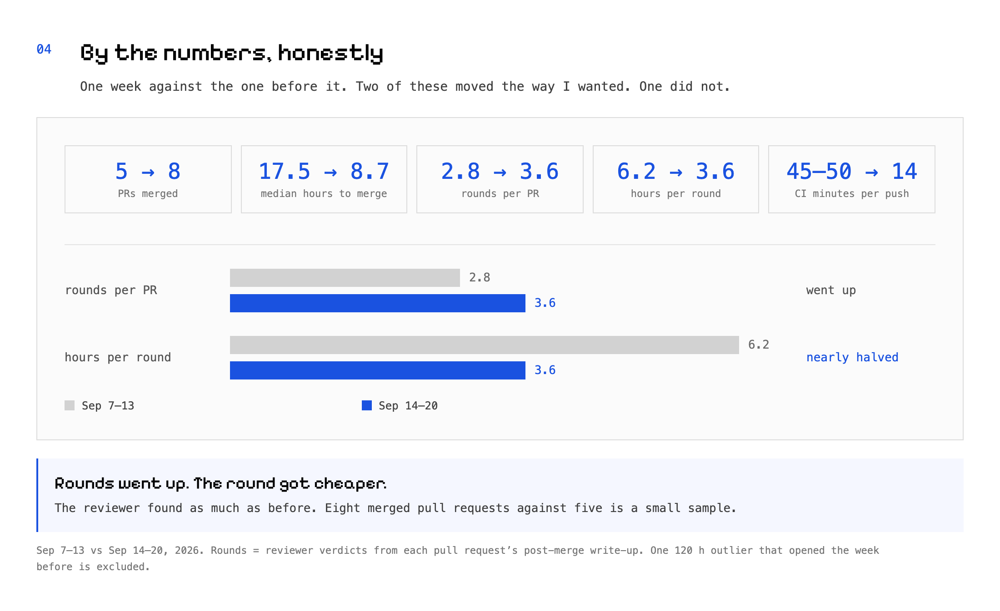
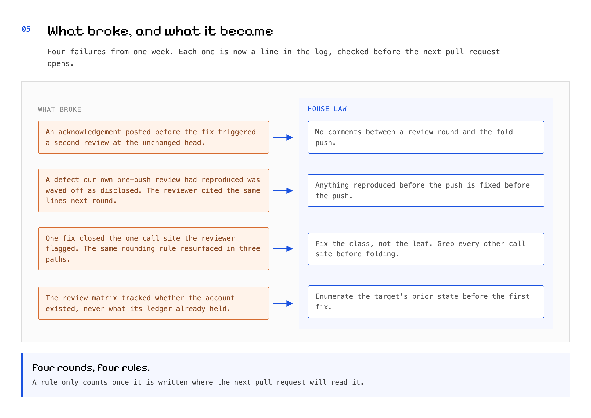

A review round is a unit of time
What one pass of human code review costs when agents write the code
Eight rounds. Four days later, three.
One pull request took eight reviewer rounds and 26.5 hours to merge. Four days after it opened, one in the same feature arc merged in 4.3 hours. The reviewer did not find less. The round got cheaper.
I am the founding engineer at General Formation. Two people, one product: Garage, an AI agent suite for one-person companies. Agents write most of the code. My co-founder reviews every pull request I open. That is the only human gate it passes.
So a review round is my unit of work. Not the commit. Not the line.
The two pull requests above are #286 and #317, four days apart in the same login arc. Between them, findings per pull request did not drop. Rounds per pull request actually went up.
What fell was the price of a round. That is the whole post.
What a round actually costs
A round is a loop, not a moment. I push. The tests run. My co-founder reads the diff. A verdict lands. I fold the findings in and push again.
The reading itself is the short part. On one pull request the verdict arrived fifteen minutes after my fold.
The wait around the reading was the expensive part. The old test lane took 45 to 50 minutes per push, and the review monitor does not close a round until the tests are green on that exact head. So every fold paid the full test wait before the next verdict could begin.
Across the previous week that averaged 6.2 hours per round.
{kind=link}

The bad one
PR #286 was the first pull request of the login arc. Eight verdicts, 26.5 hours.
Round 1 found three defects that were already there when I opened it. That round was fair.
Rounds 2 to 4 were mostly the transport, and mostly my own doing. Each fold's new code drew the next round's finding. I rewrote the transport a second time inside the loop, and that one rewrite produced three of them.
Rounds 5 to 7 were a different failure. They were spent hardening a cancel-and-rollback design for the sign-in flow. The spec never asked for it. Neither did my co-founder. It came from our own pre-review bots, which had called for cancellable async execution before the pull request ever opened.
We built it anyway. The review harness then took what shipped as the contract and probed one adjacent cell of it per round.
A pre-review finding is a proposal, not a requirement. If the spec does not ask for a mechanism, do not build it to satisfy a bot. That lesson cost three rounds.
{kind=link}

What changed
Five things, in the order they mattered.
- Sharded the test lanes four ways. The wait per push went from 45 to 50 minutes down to about 14, and unlike every other item here it shortens every round of every pull request.
- A written post-mortem on every merged pull request, feeding one pattern log. The log went from 12 known bounce causes to 27 in a week, and it is read before anything new opens.
- A second agent session that reads the reviewer's rounds and hands the builder session a converge plan. It reads and it rules. It never writes code, which is what keeps it honest about the diff.
- Pull request bodies open with a real run. A terminal transcript, or a screenshot of the actual screen, because a reviewer who can see the thing does not have to guess what it does.
- Zero comments between a review round and the fold push. The review monitor re-reviews on any author comment, so a polite acknowledgement buys a duplicate round at the unchanged head.
Ten post-mortems were written that week.
{kind=link}

Numbers, honestly
| Sep 7–13 | Sep 14–20 | |
|---|---|---|
| PRs merged | 5 | 8 |
| Median hours to merge | 17.5 | 8.7 |
| Reviewer rounds per PR | 2.8 | 3.6 |
| Hours per round | 6.2 | 3.6 |
| CI minutes per push | 45–50 | 14 |
Rounds per pull request went up, not down. The reviewer found as much as ever, on more code than the week before.
Hours per round nearly halved. Median time from open to merge went from 17.5 hours to 8.7.
Eight merged pull requests against five is a small sample. One 120-hour outlier that opened the week before is left out of both columns. I would not bet a quarter on this. I would bet another week.
{kind=link}

What broke, and what it became
Four failures from that fortnight, and the rule each one turned into. They are rows in the pattern log now, which is the only reason any of them outlives the week it was learned.
An acknowledgement posted before the fix triggered a second review at the unchanged head. Rule: no comments between a review round and the fold push.
A defect our own pre-push review had already reproduced was waved off as disclosed. The reviewer cited the same lines the next round. Rule: anything reproduced before the push gets fixed before the push.
One fix closed the single call site the reviewer flagged. The same rounding rule resurfaced in three other paths. Rule: fix the class, not the leaf.
The review matrix tracked whether an account existed, never what its ledger already held. Rule: enumerate the target's prior state before the first fix.
{kind=link}

Next week, the same loop
I will run it again and measure it the same way. The number I want down is hours per round. The one I have stopped trying to move is rounds per pull request.
If you take one thing from this, take the post-mortem feeding a checklist. One file, one row per way a pull request has bounced, with the check that prevents it, read before the next one opens. It costs about an hour a week. Everything else here was a one-time win.